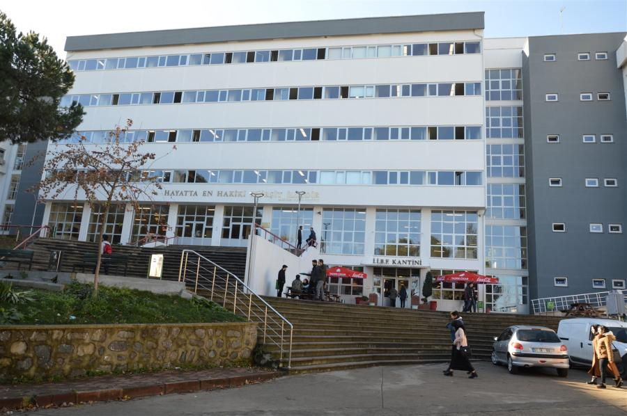
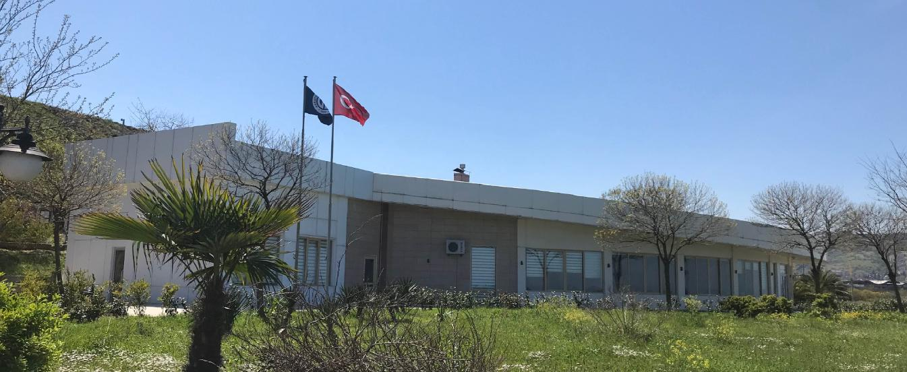
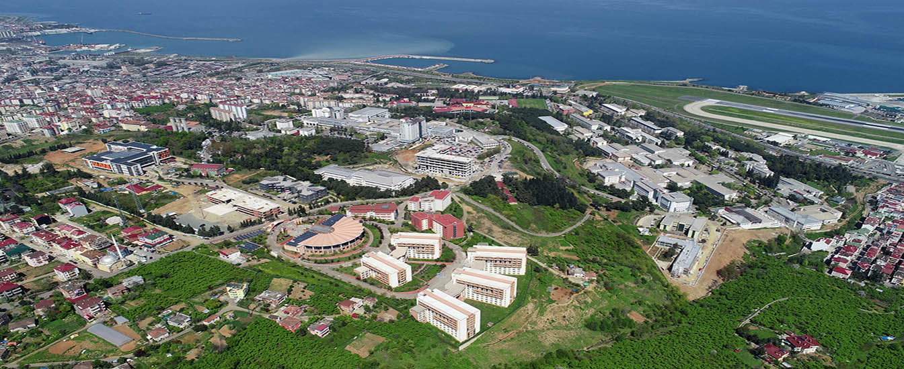
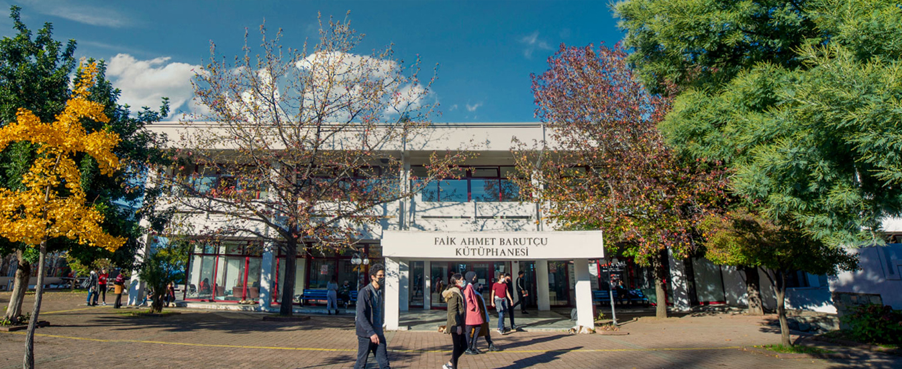
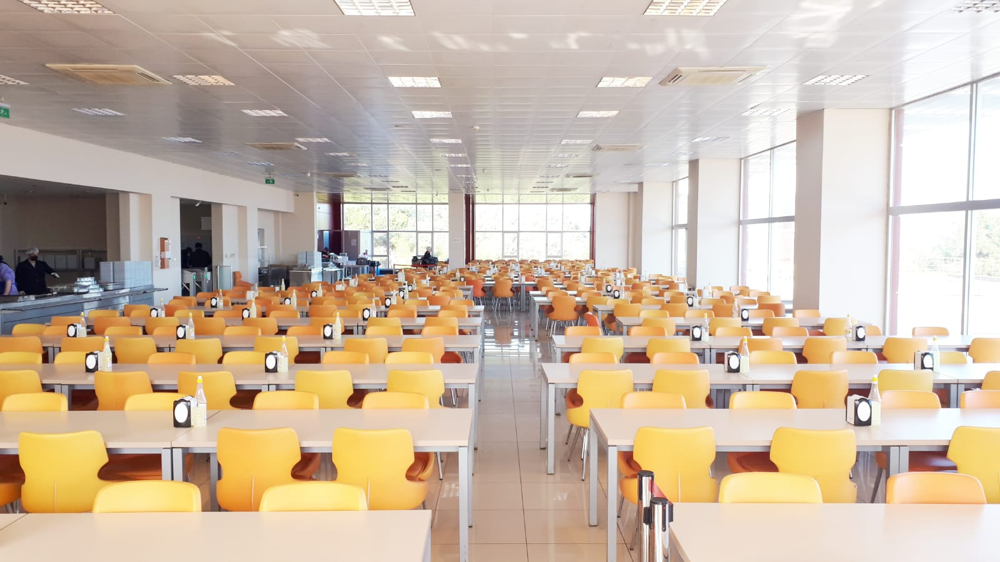
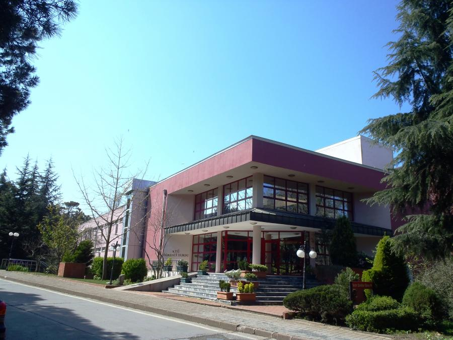
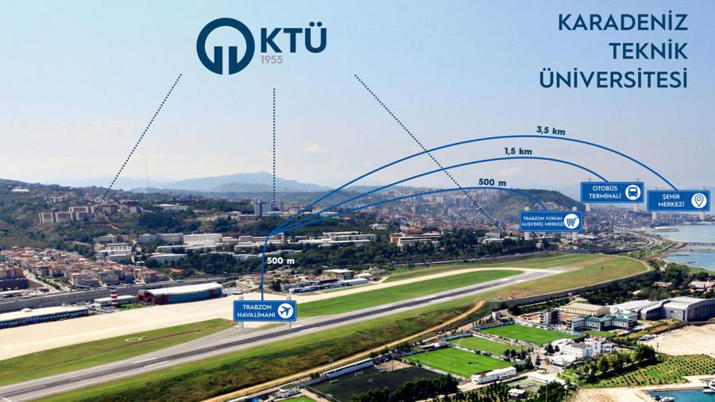

| Çalışma Saatleri | |
|---|---|
| Hafta İçi: | 08.00-21.00 |
| Hafta Sonu: | 09.00-21.00 |
| Bağımsız Çalışma Salonları: | 7/24 |
Kütüphanemizin bünyesinde 125330 Basılı Kitap, 2986 Basılı Dersi, 638264 Elektronik Kitap, 88550 Elektronik Dergi, 2039 CD ve DVD ve 9932 Lisansüstü Tez bulunmaktadır

| Kanuni Yerleşkesindeki Yemekhanelerimiz | Kanuni Yerleşkesi Dışındaki Yemekhanelerimiz |
|---|---|
| Nejmi KIRKBİR Öğrenci Yemekhanesi | Sürmene Deniz Bilimleri Fakültesi Öğrenci Yemekhanesi |
| Of Teknoloji Fakültesi Öğrenci Yemekhanesi | |
| Akademik ve İdari Personel Yemekhanesi | Sürmene Abdullah Kanca MYO Öğrenci Yemekhanesi |
| Araklı Ali Cevat Özyurt MYO Öğrenci Yemekhanesi | |
| Akademik ve İdari Personel Yemekhanesi | Arsin MYO Öğrenci Yemekhanesi |
| Trabzon MYO Öğrenci Yemekhanesi |

Üniversitemiz öğrencilerinin barınma ihtiyaçlarını karşılamak amacıyla Merkez Kanuni Yerleşkesinde 1 adet öğrenci konukevi bulunmaktadır.
Konukevimiz birbirine bağlı iki bloktan oluşmaktadır. Konukevimizde 61 misafir odamız bulunmakta olup; odalarımız 4 adet süit, 17 adet tek yataklı, 6 adet bölünmüş (ara kapı ile birbirine bağlanmış) ve 34 adet iki yataklı misafir ağırlama kapasitesine sahiptir.
KONUKEVİ BAŞVURU FORMU İÇİN TIKLAYINIZ
KONUKEVİ FİYAT LİSTESİ İÇİN TIKLAYINIZ
Adres : Üniversite Mah. Lojman Sokak No:2 Ortahisar/TRABZON
Telefon : 0462 3773578
Trabzon Milletvekili Mustafa Reşit Tarakçıoğlu ve 28 arkadaşının verdiği teklifin, TBMM'de 20 Mayıs 1955 tarih ve 6594 sayılı kanunla kabul edilmesi ile kurulmuş olan Karadeniz Teknik Üniversitesi (KTÜ) İstanbul ve Ankara illeri dışında kurulan ilk üniversitedir. Kuruluşundan yaklaşık sekiz yıl sonra, 19 Eylül 1963 tarihinde, 336 sayılı kanunla Rektörlük ve Fakülte kadroları verilerek Temel Bilimler, İnşaat-Mimarlık, Makine-Elektrik ve Orman Fakülteleri kurulmuştur. KTÜ, eğitim-öğretime 2 Aralık 1963 tarihinde Esentepe Mahallesi'ndeki Trabzon Atatürk İlköğretim Okulu'nun ilkokul binasında başlamış olup 1966 yılında bugünkü merkez kampüse taşınmıştır. Gelişimini sürdüren KTÜ, 4 Ocak 1973 tarih ve 1659 sayılı kanunla da Yer Bilimleri ve Tıp Fakültesi kadrolarını almıştır. 1981 yılında, 2547 sayılı Yükseköğretim Kanunu'nun çıkarılmasından sonra KTÜ sürekli büyümeye devam etmiş, buna bağlı olarak bünyesinde yeni fakülte ve bölümler açılmıştır.
Bugün KTÜ’de 12 fakülte, 1 yüksekokul, 8 meslek yüksekokulu kapsamında; 78 lisans ve 34 ön lisans programı; 6 enstitüde, 80 yüksek lisans ve 57 doktora programı bulunmaktadır.
KTÜ, güçlü akademik kadrosu, 31 bin öğrencisi ve 248 bini aşkın mezunu ile ülkemizin önde gelen üniversitelerinden biridir. Köklü geçmişi, oturmuş gelenekleri, eğitim-öğretim deneyimi, altyapısı, mükemmel kampüsü ve nitelikli eğitim-öğretim ve araştırma kadrosu ile KTÜ bir ekoldür.

Eğitim-öğretim, araştırma ve toplumsal hizmet alanlarındaki uygulamalarıyla gelişmeye açık üretken bireylerin yetişmesine, yüksek düzeyde bilimsel ve teknolojik ürünlerin ortaya çıkmasına, toplumun kalkınması ve refahına öncülük yapma görevini sürdürmek
Yenilikçi üretime yönelik ulusal ve uluslararası ihtiyaçları öngörecek şekilde araştırmalar yapan, vereceği eğitim-öğretim hizmetlerinde kaliteyi önceleyen, oluşturacağı kültür ortamı ile ulusal ve uluslararası düzeyde tercih edilen bir üniversite olmak.